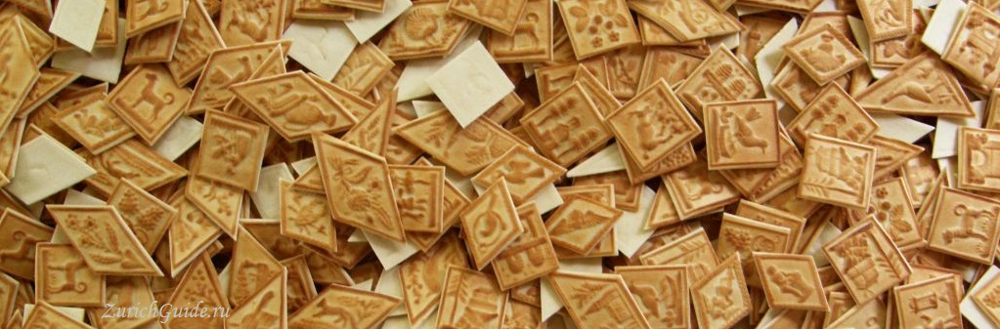

Національна кухня Швейцарії
Рёшти
Это простое картофельное блюдо, традиционное для немецкой части. От него появился термин «Rösti ditch», воображаемая линия — или культурный раздел — между немецкоязычным и французскоязычным регионами в Швейцарии. Тем не менее, рошти иногда подаются и во французской части.
В решти могут добавлять для вкуса различные добавки, в зависимости от региона: бекон в Berner Rösti, овощи, яйца, сыр Аппенцель и др.
Birchermuesli (мюсли)
«Birchermüesli» были изобретена доктором Максимилиан Оскар Бирхер-Беннером (1867-1939), пионером органической медицины и сторонником натуральной пищи.
Первоначальный рецепт мюсли от Бирхер-Беннера выглядил так (на одну персону):
- 1 столовая ложка овсяных хлопьев, замоченных на ночь в 2-3 столовых ложки воды
- 1 столовая ложка лимонного сока
- 200 гр яблок (примерно 1 большое яблоко, желательно кислое), натертое и смешанное со всеми остальным непосредственно перед подачей на стол.
- Опционально — 1 столовая ложка фундука или миндаля
Tirggel
Tirggel — это медовое печенье со специями, популярное в Цюрихе на рождество и праздник Sechselaeuten. Tirggel запекаются таким образом, что сторона с рисунком имеет золотисто-коричневый цвет, обратная сторона остается светлой.
Tirggel были изобретены не в Цюрихе — сохранились рецепты и формы еще из Месопотамии, откуда это печенье распространилось по всей Европе. Однако до наших дней оно сохранилось только в Цюрихе.
